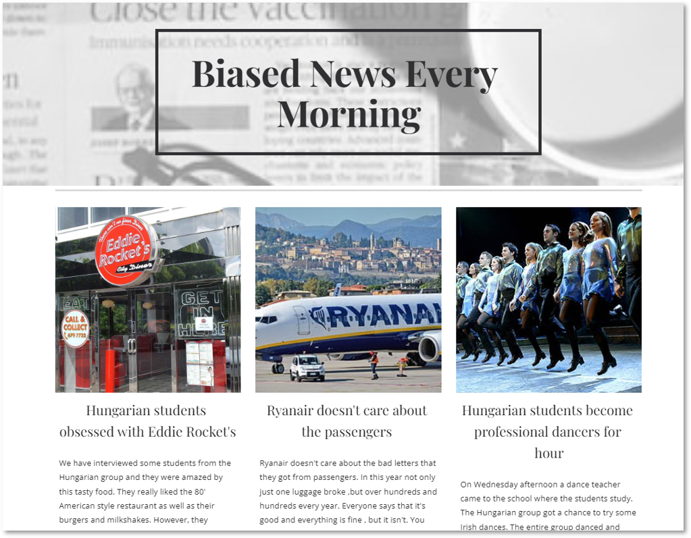
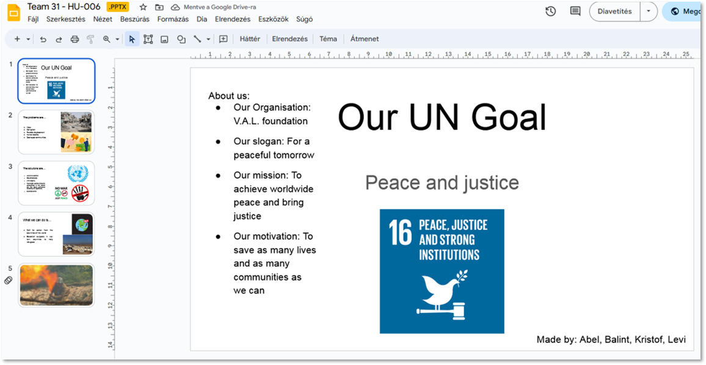

Írország - projektek
Írországi utunk alatt két projektet készítettünk. Mindkettő úgy épült fel, hogy az első három nap olyan feladatokat végeztünk, amivel fejlesztettünk valamilyen képességünket, amelyet majd a projekt elkészítésében tudtunk használni. A maradék 1-2 napban pedig 4-5 fős csapatokban elkészítettük majd előadtuk a projektünket.
Minden órát valamilyen játékkal kezdtünk. Bemelegítésnek nagyon jó volt, mert felrázott minket és jól szórakoztunk. A hangulat sokkal oldottabbá vált. Ezt követően valamilyen megosztó témáról beszélgettünk, és alkottunk véleményt. Tanárunk célja az volt, hogy minél többet beszéltessen minket és nem szólt bele, nem javított ki, ha valamit nem helyesen mondtunk, de meg lehetett érteni, mit is szeretnénk megfogalmazni. A lényeg az volt, hogy ne féljünk beszélni és pontosan azt próbáljuk elmondani, amit valóban szeretnénk. Számunkra kellemes meglepetés volt, hogy mennyivel jobban beszéltünk angolul, mint az olaszok.
Mini-projektek
Mini-projekt alatt azt kell érteni, amit egy-egy órán állítottunk össze. Többször párokba álltunk és úgy vitattunk meg dolgokat, vagy 2-3 fős kiscsoportokban állítottunk össze olyan kis anyagokat, amiket utána a nagy projekthez is felhasználhattunk.
Szerdánként az iskola épületének alagsorába gyűltek össze az ottani éppen angol képzésben résztvevő, akár más kontinensről érkező diákok. Mi is részt vettünk egy ilyen találkozón és vegyes csoportokat alakítottunk ki. A csoportban először rengeteg dologról beszélgettünk, hogy kicsit összeismerkedjünk. Utána a társaságot 4 felé osztották és egy adott témával kapcsolatban 2-2 csapatnak pro és kontra érvekkel kellett felkészülnie egy vitára. Ezután két csapat összecsapott egymással, majd a vita végén szavazással eldöntöttük, hogy melyik csoport szerepelt jobban.
Témák
1. hét – Fake news (Hamis hírek)
Úgy épült fel az egész foglalkozás, hogy az elején bemelegítésképpen a témával kapcsolatos szavakat ismertünk meg és azokkal játszottunk különféle játékokat. Utána már nagyobb szókincsünk volt a témát illetően, ezért így már képesek voltunk feladatokat megoldani. Ezután kezdtük el csapatonként elkészíteni önálló cikkeinket. Az elkészült projektet az utolsó nap második felében mutattuk be
2. hét – Sustainability (Fenttarthatóság)
Kezdetben kaptunk címszavakat a fenttarthatósággal kapcsolatban, és csapatonként ki kellett választani azt a hármat, ami szerintünk a legfontosabb. Választásunkat természetesen meg is kellett indokolnunk. Ehhez a témához először anyagokat gyűjtöttünk, majd elkészítettük a projektünket.
Ennek eredménye egy videó lett, amit a bemutató előtti napon vettünk fel és szerkesztettünk meg. Készült olyan videó amiben szerepeltünk és olyan is, amelyben csak képek voltak szövegalámondással.